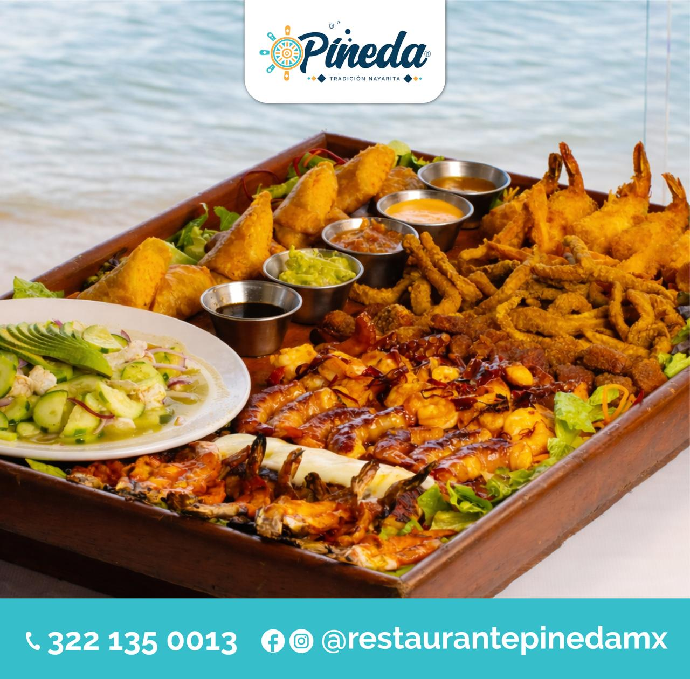
Restaurante Pineda
Restaurante de mariscos y cocina nayarita frente al mar con más de 40 años de tradición, famoso por su pescado zarandeado y mariscadas.

Restaurante de mariscos y cocina nayarita frente al mar con más de 40 años de tradición, famoso por su pescado zarandeado y mariscadas.
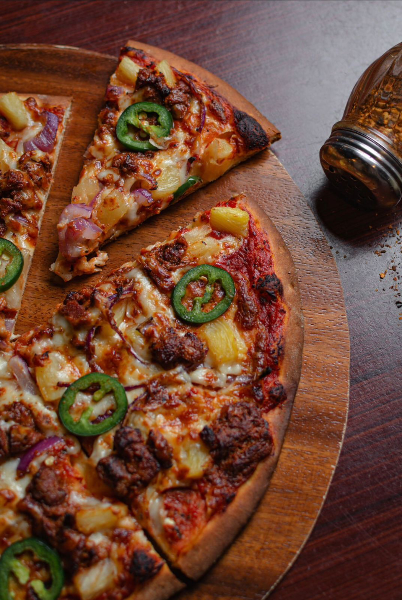
Pizzería local en Rincón de Guayabitos conocida por sus pizzas artesanales cocinadas en horno tradicional, con ambiente familiar y opciones casuales perfectas para una comida o cena relajada tras un día de playa.
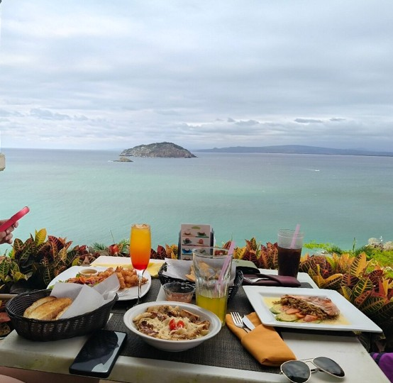
Restaurante con una vista espectacular a la Bahía de Guayabitos, ideal para disfrutar de mariscos y comida mexicana con un ambiente agradable y vistas al atardecer.
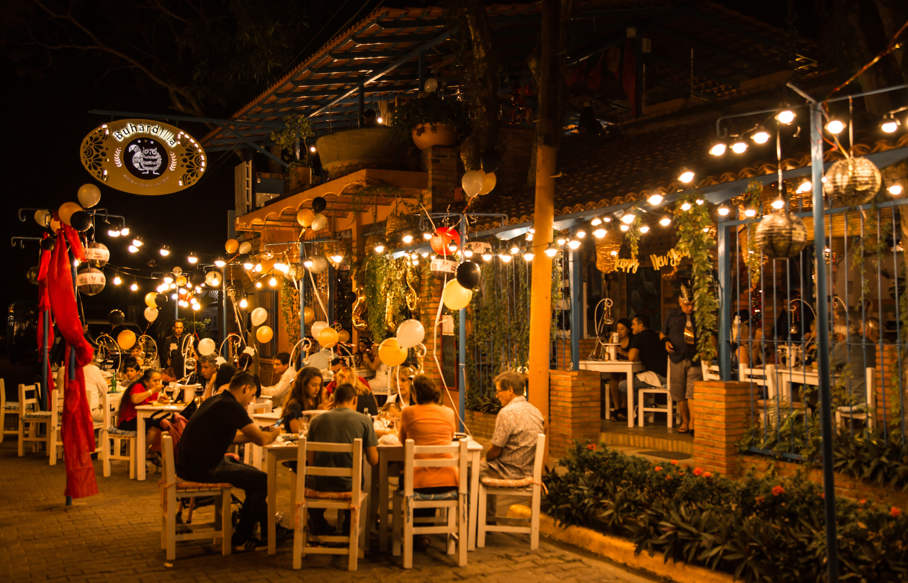
Restaurante con un concepto diferente que combina cocina italiana y argentina con ingredientes frescos; ofrece pizzas, cortes a la leña, pastas y ensaladas en un ambiente artístico y acogedor.
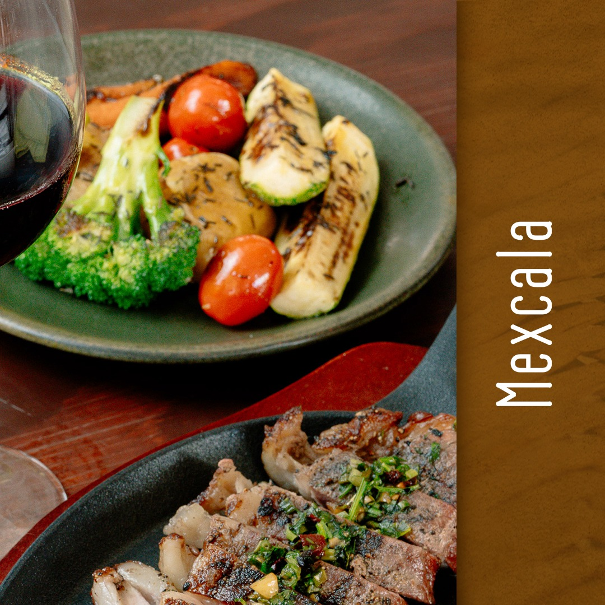
Restaurante con enfoque en cocina mexicana tradicional y platillos populares con un toque local, ideal para comida casual y familiar.
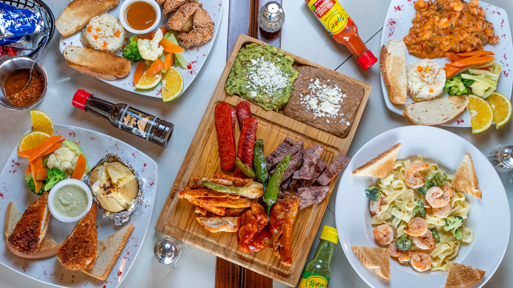
Restaurante con enfoque en cocina mexicana y mariscos en un ambiente informal y acogedor, ideal para desayunos y comidas locales.
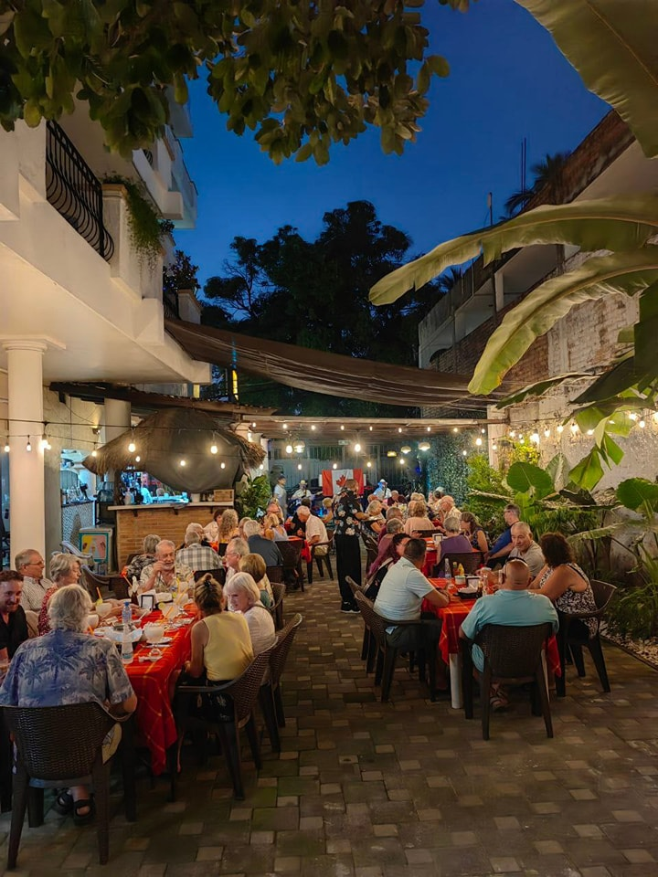
Cocina internacional, hamburguesas gourmet y bebidas tropicales.
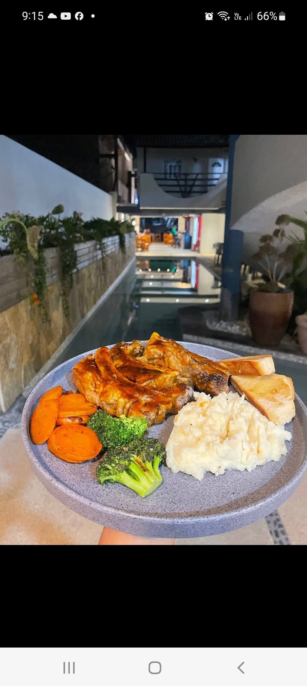
Bar y restaurante playero con ambiente relajado ideal para tragos, snacks y comidas ligeras junto al mar.
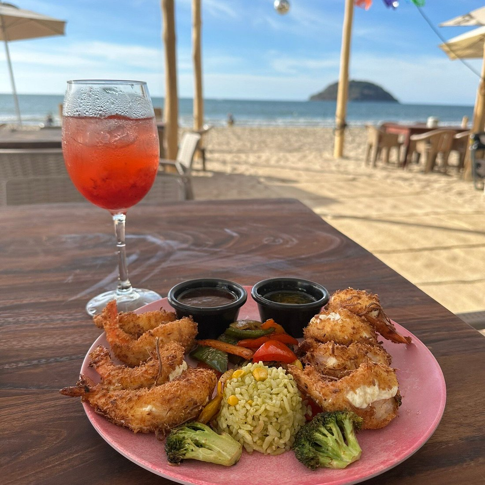
Restaurante-bar frente a la playa con cocina mexicana y mariscos, así como bebidas refrescantes.
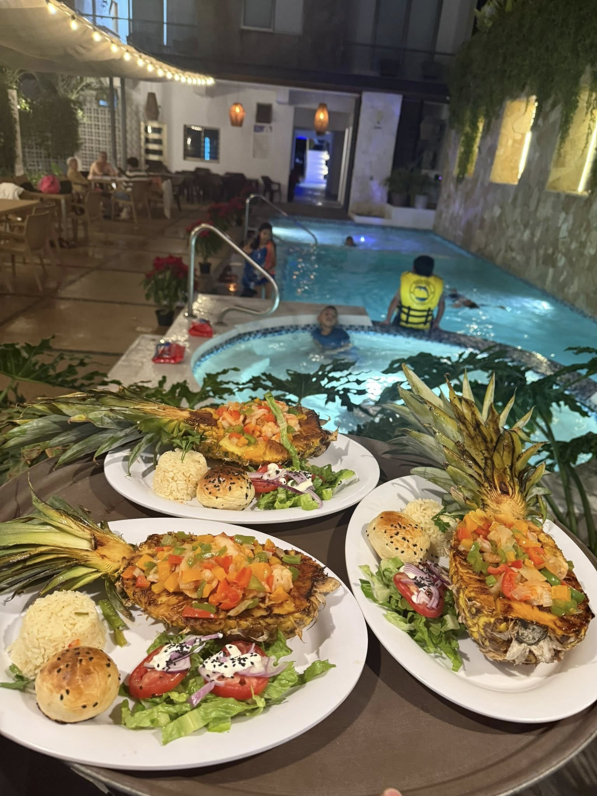
Restaurante-bar con mariscos, platillos mexicanos y entretenimiento (karaoke), muy popular entre locales y visitantes por su ambiente animado en la zona de Guayabitos.
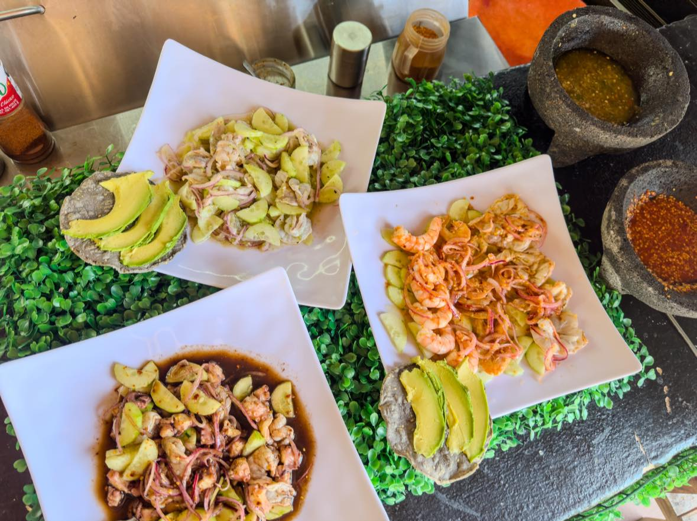
Bar de mariscos y tacos con buen ambiente y sabor local. Cuentan con tacos de mariscos, tostadas y platillos, ideal para un almuerzo relajado o cena ligera.
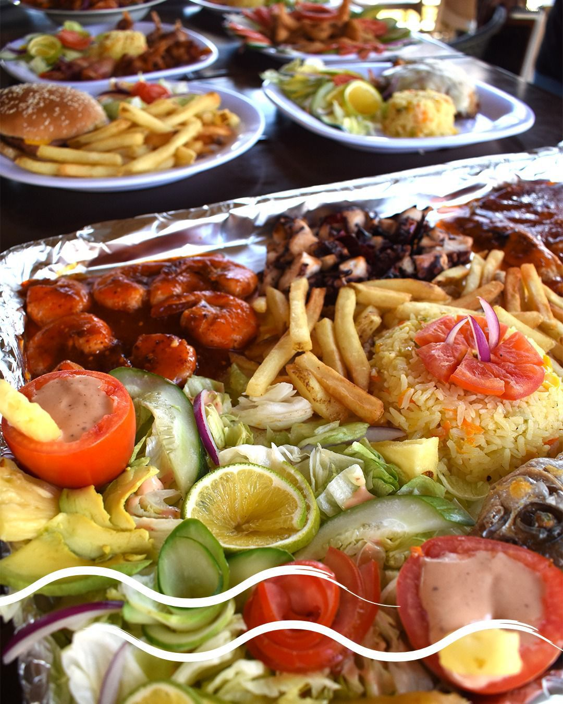
Restaurante de mariscos famoso por sus mariscos, alberca y un tiburon grande colgado.